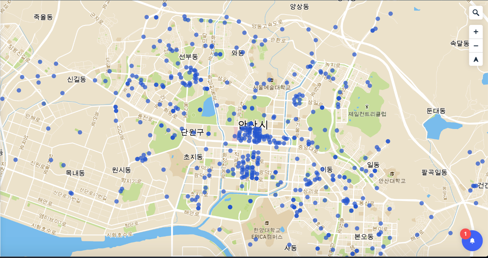

안녕하세요 저희는 팀 DooBaeLee입니다.
저희는 안산에 거주하고 있는 사람들에게
편의를 줄 수 있는 안산시 공중화장실 어플을 만들어보았습니다.
저희가 만든 앱의 기능으로는 우선 어플을 키면
현재위치를 보여줍니다.
그리고 지도를 통해 어디가 가장 가까운 화장실인지
알 수 있게됩니다.
또한 화장실 마크를 클릭해보면 화장실의 정보를
알 수 있게됩니다. (구현예정이였지만 실패...)
혹시 API에 문제가 있거나 불편한 점이 있으면
lcs3623@naver.com으로 연락주시면 감사하겠습니다.
감사합니다.